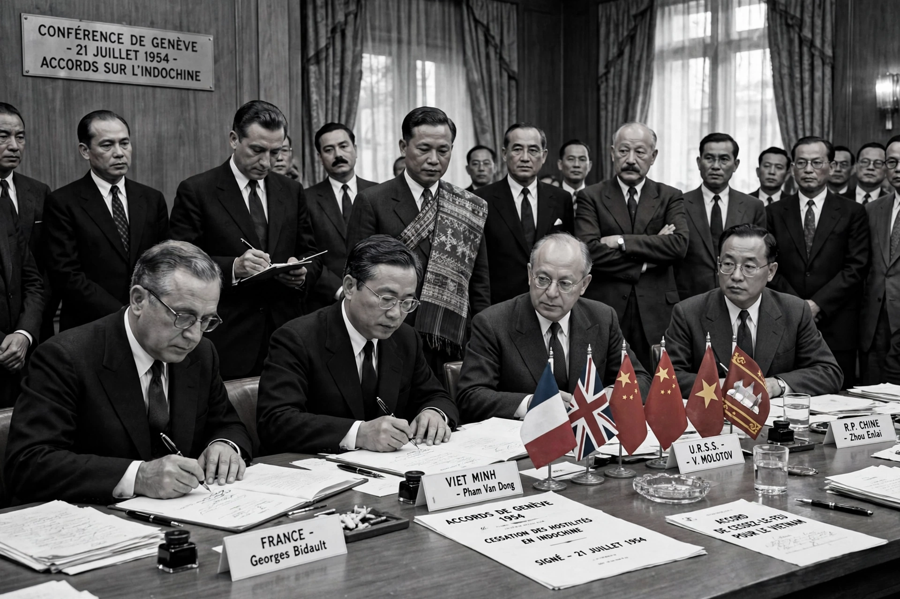

| Geneva Accords (1954) | |
|---|---|
 | |
| Signed | 20–21 July 1954 |
| Location | Geneva, Switzerland |
| Context | End of the First Indochina War |
| Parties | France, Viet Minh, State of Vietnam, Laos, Cambodia, and major powers as participants |
The Geneva Accords were a set of agreements concluded at the Geneva Conference of 1954 that ended the First Indochina War and temporarily divided Vietnam. They recognised the independence of Laos and Cambodia and set out elections intended to reunify Vietnam.
The ceasefire agreement, signed by France and the Viet Minh, drew a provisional military demarcation line at the 17th parallel (Ben Hai River), with Viet Minh forces regrouping north and French and State of Vietnam forces south. Civilians could move freely between zones for 300 days, prompting a mass migration, largely of northern Catholics southward. The conference's Final Declaration — unsigned — called for nationwide elections by July 1956 under international supervision by India, Canada and Poland.
Separate agreements recognised the Royal Lao Government, withdrew foreign forces, and provided for Pathet Lao regroupment in two northern provinces — a settlement later revisited at Geneva in 1962 concerning Laos and leaders such as Souvanna Phouma. Cambodia under Norodom Sihanouk secured recognition of its neutrality and independence.
The United States and the State of Vietnam did not sign the Final Declaration; Washington issued a unilateral statement taking note of the accords. South Vietnam's Ngo Dinh Diem, backed by the US, refused the 1956 elections, fearing a Ho Chi Minh victory. The division hardened into North and South Vietnam, leading to the Vietnam War, ended only by the Paris Peace Accords of 1973. The term "Geneva Accords" is also used for other Geneva agreements, notably the 1988 accords on Afghanistan.